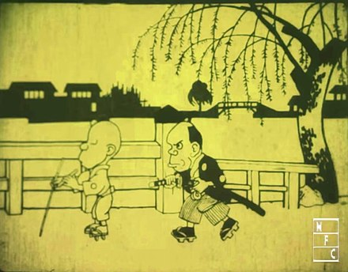
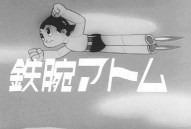
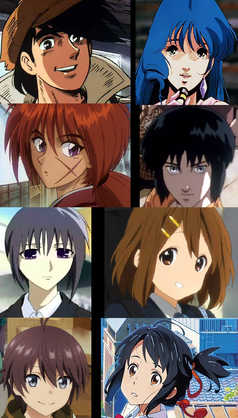
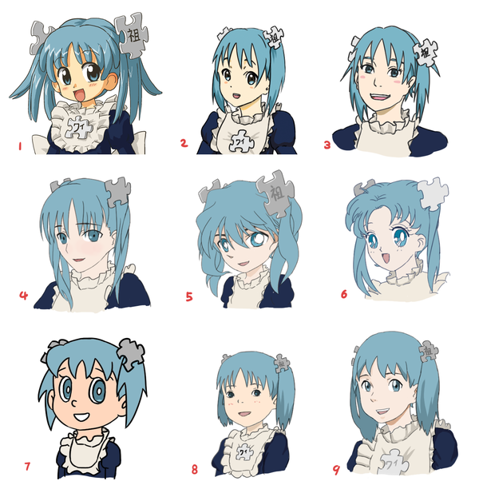
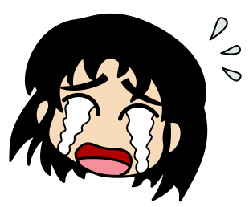

Anime (Japanese: アニメ, IPA: [aɲime] (listen)) is hand-drawn and computer-generated animation originating from Japan. Outside of Japan and in English, anime refers specifically to animation produced in Japan.[1] However, in Japan and in Japanese, anime (a term derived from a shortening of the English word animation) describes all animated works, regardless of style or origin. Animation produced outside of Japan with similar style to Japanese animation is commonly referred to as anime-influenced animation
The earliest commercial Japanese animations date to 1917. A characteristic art style emerged in the 1960s with the works of cartoonist Osamu Tezuka and spread in following decades, developing a large domestic audience. Anime is distributed theatrically, through television broadcasts, directly to home media, and over the Internet. In addition to original works, anime are often adaptations of Japanese comics (manga), light novels, or video games. It is classified into numerous genres targeting various broad and niche audiences
Anime is a diverse medium with distinctive production methods that have adapted in response to emergent technologies. It combines graphic art, characterization, cinematography, and other forms of imaginative and individualistic techniques.[2] Compared to Western animation, anime production generally focuses less on movement, and more on the detail of settings and use of "camera effects", such as panning, zooming, and angle shots.[2] Diverse art styles are used, and character proportions and features can be quite varied, with a common characteristic feature being large and emotive eyes.[3]
The anime industry consists of over 430 production companies, including major studios such as Studio Ghibli, Kyoto Animation, Sunrise, Bones, Ufotable, MAPPA, Wit Studio, CoMix Wave Films, Production I.G and Toei Animation. Since the 1980s, the medium has also seen widespread international success with the rise of foreign dubbed, subtitled programming, and since the 2010s its increasing distribution through streaming services and a widening demographic embrace of anime culture, both within Japan and worldwide.[4] As of 2016, Japanese animation accounted for 60% of the world's animated television shows.[5]
skills
As a type of animation, anime is an art form that comprises many genres found in other mediums; it is sometimes mistakenly classified as a genre itself.[6] In Japanese, the term anime is used to refer to all animated works, regardless of style or origin.[7] English-language dictionaries typically define anime (/ˈænɪmeɪ/)[8] as "a style of Japanese animation"[9] or as "a style of animation originating in Japan".[10] Other definitions are based on origin, making production in Japan a requisite for a work to be considered "anime".[11
The etymology of the term anime is disputed. The English word "animation" is written in Japanese katakana as アニメーション (animēshon) and as アニメ (anime, pronounced [a.ɲi.me] (listen)) in its shortened form.[11] Some sources claim that the term is derived from the French term for animation dessin animé ("cartoon", literally 'animated drawing'),[12] but others believe this to be a myth derived from the popularity of anime in France in the late 1970s and 1980s.[11]
In English, anime—when used as a common noun—normally functions as a mass noun. (For example: "Do you watch anime?" or "How much anime have you collected?")[13][14] As with a few other Japanese words, such as saké and Pokémon, English texts sometimes spell anime as animé (as in French), with an acute accent over the final e, to cue the reader to pronounce the letter, not to leave it silent as English orthography may suggest. Prior to the widespread use of anime, the term Japanimation, a portmanteau of Japan and animation, was prevalent throughout the 1970s and 1980s. In the mid-1980s, the term anime began to supplant Japanimation;[15] in general, the latter term now only appears in period works where it is used to distinguish and identify Japanese animation.[16]
history
precursors
Emakimono and kagee are considered precursors of Japanese animation.[17] Emakimono was common in the eleventh century. Traveling storytellers narrated legends and anecdotes while the emakimono was unrolled from the right to left with chronological order, as a moving panorama.[17] Kagee was popular during the Edo period and originated from the shadows play of China.[17] Magic lanterns from the Netherlands were also popular in the eighteenth century.[17] The paper play called Kamishibai surged in the twelfth century and remained popular in the street theater until the 1930s.[17] Puppets of the bunraku theater and ukiyo-e prints are considered ancestors of characters of most Japanese animations.[17] Finally, mangas were a heavy inspiration for anime. Cartoonists Kitzawa Rakuten and Okamoto Ippei used film elements in their strips.[17]
pioneers
Animation in Japan began in the early 20th century, when filmmakers started to experiment with techniques pioneered in France, Germany, the United States, and Russia.[18] A claim for the earliest Japanese animation is Katsudō Shashin (c. 1907),[19] a private work by an unknown creator.[20] In 1917, the first professional and publicly displayed works began to appear; animators such as Ōten Shimokawa, Seitarō Kitayama, and Jun'ichi Kōuchi (considered the "fathers of anime") produced numerous films, the oldest surviving of which is Kōuchi's Namakura Gatana.[21] Many early works were lost with the destruction of Shimokawa's warehouse in the 1923 Great Kantō earthquake.[22]
y the mid-1930s, animation was well-established in Japan as an alternative format to the live-action industry. It suffered competition from foreign producers, such as Disney, and many animators, including Noburō Ōfuji and Yasuji Murata, continued to work with cheaper cutout animation rather than cel animation.[23] Other creators, including Kenzō Masaoka and Mitsuyo Seo, nevertheless made great strides in technique, benefiting from the patronage of the government, which employed animators to produce educational shorts and propaganda.[24] In 1940, the government dissolved several artists' organizations to form the Shin Nippon Mangaka Kyōkai.[a][25] The first talkie anime was Chikara to Onna no Yo no Naka (1933), a short film produced by Masaoka.[26][27] The first feature-length anime film was Momotaro: Sacred Sailors (1945), produced by Seo with a sponsorship from the Imperial Japanese Navy.[28] The 1950s saw a proliferation of short, animated advertisements created for television.[29]
modern
In the 1960s, manga artist and animator Osamu Tezuka adapted and simplified Disney animation techniques to reduce costs and limit frame counts in his productions.[30] Originally intended as temporary measures to allow him to produce material on a tight schedule with an inexperienced staff, many of his limited animation practices came to define the medium's style.[31] Three Tales (1960) was the first anime film broadcast on television;[32] the first anime television series was Instant History (1961–64).[33] An early and influential success was Astro Boy (1963–66), a television series directed by Tezuka based on his manga of the same name. Many animators at Tezuka's Mushi Production later established major anime studios (including Madhouse, Sunrise, and Pierrot).
The 1970s saw growth in the popularity of manga, many of which were later animated. Tezuka's work—and that of other pioneers in the field—inspired characteristics and genres that remain fundamental elements of anime today. The giant robot genre (also known as "mecha"), for instance, took shape under Tezuka, developed into the super robot genre under Go Nagai and others, and was revolutionized at the end of the decade by Yoshiyuki Tomino, who developed the real robot genre.[34] Robot anime series such as Gundam and Super Dimension Fortress Macross became instant classics in the 1980s, and the genre remained one of the most popular in the following decades.[35] The bubble economy of the 1980s spurred a new era of high-budget and experimental anime films, including Nausicaä of the Valley of the Wind (1984), Royal Space Force: The Wings of Honnêamise (1987), and Akira (1988).[3
Neon Genesis Evangelion (1995), a television series produced by Gainax and directed by Hideaki Anno, began another era of experimental anime titles, such as Ghost in the Shell (1995) and Cowboy Bebop (1998). In the 1990s, anime also began attracting greater interest in Western countries; major international successes include Sailor Moon and Dragon Ball Z, both of which were dubbed into more than a dozen languages worldwide. In 2003, Spirited Away, a Studio Ghibli feature film directed by Hayao Miyazaki, won the Academy Award for Best Animated Feature at the 75th Academy Awards. It later became the highest-grossing anime film,[b] earning more than $355 million. Since the 2000s, an increased number of anime works have been adaptations of light novels and visual novels; successful examples include The Melancholy of Haruhi Suzumiya and Fate/stay night (both 2006). Demon Slayer: Kimetsu no Yaiba the Movie: Mugen Train became the highest-grossing Japanese film and one of the world's highest-grossing films of 2020.[37] It also became the fastest grossing film in Japanese cinema, because in 10 days it made 10 billion yen ($95.3m; £72m).[37] It beat the previous record of Spirited Away which took 25 days.[37]
attributes
Anime differs from other forms of animation by its art styles, methods of animation, its production, and its process. Visually, anime works exhibit a wide variety of art styles, differing between creators, artists, and studios.[38] While no single art style predominates anime as a whole, they do share some similar attributes in terms of animation technique and character design.
Anime is fundamentally characterized by the use of limited animation, flat expression, the suspension of time, its thematic range, the presence of historical figures, its complex narrative line and, above all, a peculiar drawing style, with characters characterized by large and oval eyes, with very defined lines, bright colors and reduced movement of the lips.[39][4

technique
Modern anime follows a typical animation production process, involving storyboarding, voice acting, character design, and cel production. Since the 1990s, animators have increasingly used computer animation to improve the efficiency of the production process. Early anime works were experimental, and consisted of images drawn on blackboards, stop motion animation of paper cutouts, and silhouette animation.[41][42] Cel animation grew in popularity until it came to dominate the medium. In the 21st century, the use of other animation techniques is mostly limited to independent short films,[43] including the stop motion puppet animation work produced by Tadahito Mochinaga, Kihachirō Kawamoto and Tomoyasu Murata.[44][45] Computers were integrated into the animation process in the 1990s, with works such as Ghost in the Shell and Princess Mononoke mixing cel animation with computer-generated images.[46] Fuji Film, a major cel production company, announced it would stop cel production, producing an industry panic to procure cel imports and hastening the switch to digital processes.[4
Prior to the digital era, anime was produced with traditional animation methods using a pose to pose approach.[41] The majority of mainstream anime uses fewer expressive key frames and more in-between animat
Japanese animation studios were pioneers of many limited animation techniques, and have given anime a distinct set of conventions. Unlike Disney animation, where the emphasis is on the movement, anime emphasizes the art quality and let limited animation techniques make up for the lack of time spent on movement. Such techniques are often used not only to meet deadlines but also as artistic devices.[48] Anime scenes place emphasis on achieving three-dimensional views, and backgrounds are instrumental in creating the atmosphere of the work.[18] The backgrounds are not always invented and are occasionally based on real locations, as exemplified in Howl's Moving Castle and The Melancholy of Haruhi Suzumiya.[49][50] Oppliger stated that anime is one of the rare mediums where putting together an all-star cast usually comes out looking "tremendously impressive".[51]
The cinematic effects of anime differentiates itself from the stage plays found in American animation. Anime is cinematically shot as if by camera, including panning, zooming, distance and angle shots to more complex dynamic shots that would be difficult to produce in reality.[52][53][54] In anime, the animation is produced before the voice acting, contrary to American animation which does the voice acting first.[
characters
The body proportions of human anime characters tend to accurately reflect the proportions of the human body in reality. The height of the head is considered by the artist as the base unit of proportion. Head heights can vary, but most anime characters are about seven to eight heads tall.[56] Anime artists occasionally make deliberate modifications to body proportions to produce super deformed characters that feature a disproportionately small body compared to the head; many super deformed characters are two to four heads tall. Some anime works like Crayon Shin-chan completely disregard these proportions, in such a way that they resemble caricatured Western cartoons.
A common anime character design convention is exaggerated eye size. The animation of characters with large eyes in anime can be traced back to Osamu Tezuka, who was deeply influenced by such early animation characters as Betty Boop, who was drawn with disproportionately large eyes.
Tezuka is a central figure in anime and manga history, whose iconic art style and character designs allowed for the entire range of human emotions to be depicted solely through the eyes.[58] The artist adds variable color shading to the eyes and particularly to the cornea to give them greater depth
Generally, a mixture of a light shade, the tone color, and a dark shade is used.[59][60] Cultural anthropologist Rachel Thorn argues that Japanese animators and audiences do not perceive such stylized eyes as inherently more or less foreign.[61] However, not all anime characters have large eyes. For example, the works of Hayao Miyazaki are known for having realistically proportioned eyes, as well as realistic hair colors on their characters.[62]
Hair in anime is often unnaturally lively and colorful or uniquely styled. The movement of hair in anime is exaggerated and "hair action" is used to emphasize the action and emotions of characters for added visual effect.[63] Poitras traces hairstyle color to cover illustrations on manga, where eye-catching artwork and colorful tones are attractive for children's manga.[63] Despite being produced for a domestic market, anime features characters whose race or nationality is not always defined, and this is often a deliberate decision, such as in the Pokémon animated series.[64]
Hair in anime is often unnaturally lively and colorful or uniquely styled. The movement of hair in anime is exaggerated and "hair action" is used to emphasize the action and emotions of characters for added visual effect.[63] Poitras traces hairstyle color to cover illustrations on manga, where eye-catching artwork and colorful tones are attractive for children's manga.[63] Despite being produced for a domestic market, anime features characters whose race or nationality is not always defined, and this is often a deliberate decision, such as in the Pokémon animated series.
Anime and manga artists often draw from a common canon of iconic facial expression illustrations to denote particular moods and thoughts.[65] These techniques are often different in form than their counterparts in Western animation, and they include a fixed iconography that is used as shorthand for certain emotions and moods.[66] For example, a male character may develop a nosebleed when aroused.[66] A variety of visual symbols are employed, including sweat drops to depict nervousness, visible blushing for embarrassment, or glowing eyes for an intense glare.[67] Another recurring sight gag is the use of chibi (deformed, simplified character designs) figures to comedically punctuate emotions like confusion or embarrassment.[66]
music
The opening and credits sequences of most anime television series are accompanied by J-pop or J-rock songs, often by reputed bands—as written with the series in mind—but are also aimed at the general music market, therefore they often allude only vaguely or not at all, to the thematic settings or plot of the series. Also, they are often used as incidental music ("insert songs") in an episode, in order to highlight particularly important scenes.[68][better source needed]
genres
nime are often classified by target demographic, including children's (子供, kodomo), girls' (少女, shōjo), boys' (少年, shōnen), young men (青年, Seinen), young women (女性, josei) and a diverse range of genres targeting an adult audience. Shoujo and shounen anime sometimes contain elements popular with children of both sexes in an attempt to gain crossover appeal. Adult anime may feature a slower pace or greater plot complexity that younger audiences may typically find unappealing, as well as adult themes and situations.[69] A subset of adult anime works featuring pornographic elements are labeled "R18" in Japan, and are internationally known as hentai (originating from pervert (変態, hentai)). By contrast, some anime subgenres incorporate ecchi, sexual themes or undertones without depictions of sexual intercourse, as typified in the comedic or harem genres; due to its popularity among adolescent and adult anime enthusiasts, the inclusion of such elements is considered a form of fan service.[70][71] Some genres explore homosexual romances, such as yaoi (male homosexuality) and yuri (female homosexuality). While often used in a pornographic context, the terms yaoi and yuri can also be used broadly in a wider context to describe or focus on the themes or the development of the relationships themselves.[72]
formats
Early anime works were made for theatrical viewing, and required played musical components before sound and vocal components were added to the production. In 1958, Nippon Television aired Mogura no Abanchūru ("Mole's Adventure"), both the first televised and first color anime to debut.[79] It was not until the 1960s when the first televised series were broadcast and it has remained a popular medium since.[80] Works released in a direct-to-video format are called "original video animation" (OVA) or "original animation video" (OAV); and are typically not released theatrically or televised prior to home media release.[81][82][better source needed] The emergence of the Internet has led some animators to distribute works online in a format called "original net animation"
The home distribution of anime releases were popularized in the 1980s with the VHS and LaserDisc formats.[81] The VHS NTSC video format used in both Japan and the United States is credited as aiding the rising popularity of anime in the 1990s.[81] The LaserDisc and VHS formats were transcended by the DVD format which offered the unique advantages; including multiple subtitling and dubbing tracks on the same disc.[84] The DVD format also has its drawbacks in its usage of region coding; adopted by the industry to solve licensing, piracy and export problems and restricted region indicated on the DVD player.[84] The Video CD (VCD) format was popular in Hong Kong and Taiwan, but became only a minor format in the United States that was closely associated with bootleg copies.[84
A key characteristic of many anime television shows is serialization, where a continuous story arc stretches over multiple episodes or seasons. Traditional American television had an episodic format, with each episode typically consisting of a self-contained story. In contrast, anime shows such as Dragon Ball Z had a serialization format, where continuous story arcs stretch over multiple episodes or seasons, which distinguished them from traditional American television shows; serialization has since also become a common characteristic of American streaming television shows during the "Peak TV" era.[85]